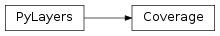
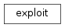
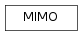

Contents
- 1 Functions
- 2 Classes
- 3 Class Inheritance Diagram
- 4 Functions
- 5 Classes
- 6 Class Inheritance Diagram
- 7 Functions
- 8 Classes
- 9 Class Inheritance Diagram
- 10 Functions
- 11 Classes
- 12 Class Inheritance Diagram
- 13 Functions
- 14 Functions
- 15 Functions
- 16 Classes
- 17 Class Inheritance Diagram
- 18 Functions
- 19 Classes
- 20 Class Inheritance Diagram
- 21 Classes
- 22 Class Inheritance Diagram
- 23 Functions
- 24 Functions
- 25 Classes
- 26 Class Inheritance Diagram
- 27 Functions
- 28 Classes
- 29 Class Inheritance Diagram
- 30 Functions
- 31 Classes
- 32 Class Inheritance Diagram
- 33 Functions
- 34 Classes
- 35 Class Inheritance Diagram
- 36 Classes
- 37 Class Inheritance Diagram
- 38 Classes
- 39 Class Inheritance Diagram
- 40 Classes
- 41 Class Inheritance Diagram
- 42 Classes
- 43 Class Inheritance Diagram
- 44 Classes
- 45 Class Inheritance Diagram
- 46 Functions
- 47 Classes
- 48 Class Inheritance Diagram
- 49 Classes
- 50 Class Inheritance Diagram
- 51 Functions
- 52 Classes
- 53 Class Inheritance Diagram
- 54 Classes
- 55 Class Inheritance Diagram
- 56 Functions
- 57 Classes
- 58 Class Inheritance Diagram
- 59 Classes
- 60 Class Inheritance Diagram
1 Functions¶
PolygonPatch(polygon, **kwargs) |
Constructs a matplotlib patch from a geometric object |
array(object[, dtype, copy, order, subok, ndmin]) |
Create an array. |
cascaded_union |
Returns the union of a sequence of geometries |
cpu_count() |
Returns the number of CPUs in the system |
outputGi_func(args) |
|
outputGi_func_test(args) |
|
pbar(verbose, **kwargs) |
|
read_gpickle(path) |
Read graph object in Python pickle format. |
urlopen(url[, data, timeout, cafile, ...]) |
|
write_gpickle(G, path[, protocol]) |
Write graph in Python pickle format. |
2 Classes¶
Layout([string, _filematini, _fileslabini, ...]) |
Handling Layout |
SelectL(L, fig, ax) |
Associates a Layout and a figure |
4 Functions¶
AFLegendre(N, M, x) |
calculate Pmm1n and Pmp1n |
AFLegendre2(L, M, x) |
calculate Pmm1l and Pmp1l |
AFLegendre3(L, M, x) |
calculate Pmm1l and Pmp1l |
BeamGauss(theta, phi[, Gmax, HPBW_az, ...]) |
Beam with a Gaussian shape |
CartToSphere(theta, phi, ex, ey, ez[, ...]) |
Convert from Cartesian to Spherical |
F0(nu, sigma) |
F0 function for horn antenna pattern |
F1(nu, sigma) |
F1 function for horn antenna pattern |
RepAzimuth1(Ec, theta, phi[, th, typ]) |
response in azimuth |
SSHFunc(L, theta, phi) |
ssh function |
SSHFunc2(L, theta, phi) |
ssh function version 2 |
VW(l, m, theta, phi) |
evaluate vector Spherical Harmonics basis functions |
VW0(n, m, x, phi, Pmm1n, Pmp1n) |
evaluate vector Spherical Harmonics basis functions |
VW2(l, m, x, phi, Pmm1l, Pmp1l) |
evaluate vector Spherical Harmonics basis functions |
cformat(x, y, **kwargs) |
complex format |
compdiag(k, A, th, ph, Fthr, Fphr[, typ, ...]) |
makes comparison between original pattern and reconstructed pattern |
cylinder(fig, pa, pb, R) |
plot a cylinder |
displot(pt, ph[, arrow]) |
discontinuous plot |
factorial(n[, exact]) |
The factorial of a number or array of numbers. |
forcesympol(A) |
plot VSH transform vsh basis in 3D plot |
index_vsh(L, M) |
vector spherical harmonics indexing |
indexssh(L[, mirror]) |
create [l,m] indexation from Lmax |
indexvsh(L) |
calculate index of vsh |
level_energy(A, l[, ifreq, L]) |
calculates energy of the level l |
lmreshape(coeff[, L]) |
level and mode reshaping |
make_axes_locatable(axes) |
|
modeMax(coeff[, L, ifreq]) |
calculates maximal mode |
mode_energy(C, M[, L, ifreq]) |
calculates mode energy |
mode_energy2(A, m[, ifreq, L]) |
calculates mode energy (version 2) |
mulcplot(x, y, **kwargs) |
handling multiple complex variable plots |
plotVW(l, m, theta, phi[, sf]) |
plot VSH transform vsh basis in 3D plot |
pol3D(fig, rho, theta, phi[, sf, shade, title]) |
polar 3D surface plot |
polycol(lpoly[, var]) |
plot a collection of polygon |
rc(group, **kwargs) |
Set the current rc params. |
rectplot(x, xpos[, ylim]) |
plot rectangles on an axis |
relative_error(Eth_original, Eph_original, ...) |
calculate relative error between original and model |
shadow(data, ax) |
data : np.array |
show3D(F, theta, phi, k[, col]) |
show 3D matplotlib diagram |
ssh(A[, L, dsf]) |
This function calculates the Scalar Spherical Harmonics coefficients |
sshModel(c, d[, L]) |
calculates sshModel |
vsh(A[, dsf]) |
This function calculates the Vector Spherical Harmonics coefficients |
zeros(shape[, dtype, order]) |
Return a new array of given shape and type, filled with zeros. |
5 Classes¶
AntPosRot(name, p, T) |
Antenna + position + Rotation |
Antenna([typ]) |
Attributes |
FontProperties([family, style, variant, ...]) |
A class for storing and manipulating font properties. |
MaxNLocator(*args, **kwargs) |
Select no more than N intervals at nice locations. |
Pattern() |
Class Pattern |
PolyCollection(verts[, sizes, closed]) |
Attributes |
PyLayers |
Generic PyLayers Meta Class |
SCoeff([typ, fmin, fmax, lmax, data, dtype, ...]) |
scalar Spherical Harmonics coefficients |
SSHCoeff(Cx, Cy, Cz) |
scalar spherical harmonics |
VCoeff(typ[, fmin, fmax, data, dtype, ind, ...]) |
Spherical Harmonics Coefficient |
VSHCoeff(Br, Bi, Cr, Ci) |
Vector Spherical Harmonics Coefficients class |
VectorCoeff(typ[, fmin, fmax, data, dtype, ...]) |
class vector spherical harmonics |

7 Functions¶
k2xyz(ik, sh) |
|
||
weights(nx, nz, kx, kz, Kx, Kz) |
Practical Demonstration of Limited Feedback Beamforming for mmWave Systems | ||
xyztok(iz, iy, ix[, Nx, Ny]) |
8 Classes¶
AntArray(**kwargs) |
Class AntArray |
Array(p[, w]) |
Array class |
Combiner(Wbr, Whb, Wsh) |
Methods |
Precoder(Fhs, Fbh, Fht) |
Methods |
TXRU() |
Tranceiver Units |
UCArray(p[, w]) |
Uniform Circular Array |
ULArray(**kwargs) |
Uniform Linear Array |
10 Functions¶
AFLegendre(N, M, x) |
calculate Pmm1n and Pmp1n |
AFLegendre2(L, M, x) |
calculate Pmm1l and Pmp1l |
AFLegendre3(L, M, x) |
calculate Pmm1l and Pmp1l |
VW(l, m, theta, phi) |
evaluate vector Spherical Harmonics basis functions |
VW0(n, m, x, phi, Pmm1n, Pmp1n) |
evaluate vector Spherical Harmonics basis functions |
VW2(l, m, x, phi, Pmm1l, Pmp1l) |
evaluate vector Spherical Harmonics basis functions |
cformat(x, y, **kwargs) |
complex format |
cylinder(fig, pa, pb, R) |
plot a cylinder |
displot(pt, ph[, arrow]) |
discontinuous plot |
factorial(n[, exact]) |
The factorial of a number or array of numbers. |
index_vsh(L, M) |
vector spherical harmonics indexing |
indexssh(L[, mirror]) |
create [l,m] indexation from Lmax |
indexvsh(L) |
calculate index of vsh |
mulcplot(x, y, **kwargs) |
handling multiple complex variable plots |
plotVW(l, m, theta, phi[, sf]) |
plot VSH transform vsh basis in 3D plot |
pol3D(fig, rho, theta, phi[, sf, shade, title]) |
polar 3D surface plot |
polycol(lpoly[, var]) |
plot a collection of polygon |
rc(group, **kwargs) |
Set the current rc params. |
rectplot(x, xpos[, ylim]) |
plot rectangles on an axis |
shadow(data, ax) |
data : np.array |
11 Classes¶
FontProperties([family, style, variant, ...]) |
A class for storing and manipulating font properties. |
PolyCollection(verts[, sizes, closed]) |
Attributes |
PyLayers |
Generic PyLayers Meta Class |
SCoeff([typ, fmin, fmax, lmax, data, dtype, ...]) |
scalar Spherical Harmonics coefficients |
SSHCoeff(Cx, Cy, Cz) |
scalar spherical harmonics |
VCoeff(typ[, fmin, fmax, data, dtype, ind, ...]) |
Spherical Harmonics Coefficient |
VSHCoeff(Br, Bi, Cr, Ci) |
Vector Spherical Harmonics Coefficients class |
VectorCoeff(typ[, fmin, fmax, data, dtype, ...]) |
class vector spherical harmonics |

13 Functions¶
AFLegendre(N, M, x) |
calculate Pmm1n and Pmp1n |
AFLegendre2(L, M, x) |
calculate Pmm1l and Pmp1l |
AFLegendre3(L, M, x) |
calculate Pmm1l and Pmp1l |
CartToSphere(theta, phi, ex, ey, ez[, ...]) |
Convert from Cartesian to Spherical |
SSHFunc(L, theta, phi) |
ssh function |
SSHFunc2(L, theta, phi) |
ssh function version 2 |
SphereToCart(theta, phi, eth, eph, bfreq) |
Spherical to Cartesian |
VW(l, m, theta, phi) |
evaluate vector Spherical Harmonics basis functions |
VW0(n, m, x, phi, Pmm1n, Pmp1n) |
evaluate vector Spherical Harmonics basis functions |
VW2(l, m, x, phi, Pmm1l, Pmp1l) |
evaluate vector Spherical Harmonics basis functions |
cformat(x, y, **kwargs) |
complex format |
cylinder(fig, pa, pb, R) |
plot a cylinder |
displot(pt, ph[, arrow]) |
discontinuous plot |
factorial(n[, exact]) |
The factorial of a number or array of numbers. |
index_vsh(L, M) |
vector spherical harmonics indexing |
indexssh(L[, mirror]) |
create [l,m] indexation from Lmax |
indexvsh(L) |
calculate index of vsh |
mulcplot(x, y, **kwargs) |
handling multiple complex variable plots |
plotVW(l, m, theta, phi[, sf]) |
plot VSH transform vsh basis in 3D plot |
pol3D(fig, rho, theta, phi[, sf, shade, title]) |
polar 3D surface plot |
polycol(lpoly[, var]) |
plot a collection of polygon |
rc(group, **kwargs) |
Set the current rc params. |
rectplot(x, xpos[, ylim]) |
plot rectangles on an axis |
shadow(data, ax) |
data : np.array |
ssh(A[, L, dsf]) |
This function calculates the Scalar Spherical Harmonics coefficients |
14 Functions¶
AFLegendre(N, M, x) |
calculate Pmm1n and Pmp1n |
AFLegendre2(L, M, x) |
calculate Pmm1l and Pmp1l |
AFLegendre3(L, M, x) |
calculate Pmm1l and Pmp1l |
VW(l, m, theta, phi) |
evaluate vector Spherical Harmonics basis functions |
VW0(n, m, x, phi, Pmm1n, Pmp1n) |
evaluate vector Spherical Harmonics basis functions |
VW2(l, m, x, phi, Pmm1l, Pmp1l) |
evaluate vector Spherical Harmonics basis functions |
cformat(x, y, **kwargs) |
complex format |
cylinder(fig, pa, pb, R) |
plot a cylinder |
displot(pt, ph[, arrow]) |
discontinuous plot |
factorial(n[, exact]) |
The factorial of a number or array of numbers. |
index_vsh(L, M) |
vector spherical harmonics indexing |
indexssh(L[, mirror]) |
create [l,m] indexation from Lmax |
indexvsh(L) |
calculate index of vsh |
mathtogeo(reverseLatitude, standardShape, ...) |
|
mulcplot(x, y, **kwargs) |
handling multiple complex variable plots |
plotVW(l, m, theta, phi[, sf]) |
plot VSH transform vsh basis in 3D plot |
pol3D(fig, rho, theta, phi[, sf, shade, title]) |
polar 3D surface plot |
polycol(lpoly[, var]) |
plot a collection of polygon |
rc(group, **kwargs) |
Set the current rc params. |
rectplot(x, xpos[, ylim]) |
plot rectangles on an axis |
shadow(data, ax) |
data : np.array |
vsh(A[, dsf]) |
This function calculates the Vector Spherical Harmonics coefficients |
15 Functions¶
boolbox([message, title, choices]) |
Display a boolean message box. |
buttonbox(*args, **kwargs) |
Display a message, a title, and a set of buttons. |
calRT_3layers_model(x, epsr, d, fGHz, theta) |
calculate R and T for an homogeneous Slab |
calRT_homogeneous_model(x, epsr, d, fGHz, theta) |
calculate R and T for an homogeneous Slab |
calsig(cval, fGHz[, typ]) |
evaluate sigma from epsr or index at a given frequency |
ccbox([message, title]) |
Display a message box with choices of Continue and Cancel. |
choicebox(*args, **kwargs) |
Present the user with a list of choices. |
codebox([message, title, text]) |
Display some text in a monospaced font, with no line wrapping. |
diropenbox([msg, title, argInitialDir]) |
A dialog to get a directory name. |
enterbox([message, title, argDefaultText]) |
Show a box in which a user can enter some text. |
fileopenbox([msg, title, argInitialFile]) |
A dialog to get a file name. |
filesavebox([msg, title, argInitialFile]) |
A file to get the name of a file to save. |
indexbox([message, title, choices]) |
Display a buttonbox with the specified choices. |
integerbox([message, title, argDefault, ...]) |
Show a box in which a user can enter an integer. |
msgbox([message, title, buttonMessage]) |
Display a messagebox |
multchoicebox(*args, **kwargs) |
Present the user with a list of choices. |
multenterbox([message, title, ...]) |
Show screen with multiple data entry fields. |
multpasswordbox([message, title, ...]) |
Same interface as multenterbox. |
passwordbox([message, title, argDefaultPassword]) |
Show a box in which a user can enter a password. |
textbox([message, title, text, codebox]) |
Display some text in a proportional font with line wrapping at word breaks. |
ynbox([message, title]) |
Display a message box with choices of Yes and No. |
16 Classes¶
Interface([fGHz, theta, name]) |
Interface between 2 medium |
Mat(name, **dm) |
Handle constitutive materials dictionnary |
MatDB([_fileini, dm]) |
MatDB Class : Material database |
MatInterface(lmat, l, fGHz, theta) |
MatInterface : Class for Interface between two materials |
PyLayers |
Generic PyLayers Meta Class |
Slab(name, matDB[, ds]) |
A Slab is a sequence of layers which have |
SlabDB([fileslab, filemat, ds, dm]) |
Slab data base |
interp1d(x, y[, kind, axis, copy, ...]) |
Interpolate a 1-D function. |

18 Functions¶
gidl(g) |
gi without diffraction | ||
plot_lines(ax, ob[, color]) |
|
||
plot_poly(ax, ob[, color]) |
plot polygon | ||
shLtmp(L) |
|||
showsig(L, s[, tx, rx]) |
show signature | ||
showsig2(lsig, L, tahe) |
|||
valid(lsig, L[, tahe]) |
Check if a signature is valid. |
19 Classes¶
Axes3D(fig[, rect]) |
3D axes object. |
PyLayers |
Generic PyLayers Meta Class |
Rays(pTx, pRx) |
Class hendling a set of rays |
Signature(sig) |
class Signature |
Signatures(L, source, target[, cutoff, ...]) |
set of Signature given 2 Gt cycle (convex) indices |
tqdm([iterable, desc, total, leave, file, ...]) |
Decorate an iterable object, returning an iterator which acts exactly like the original iterable, but prints a dynamically updating progressbar every time a value is requested. |

21 Classes¶
IntB([data, dtype, idx, slab]) |
Local Basis interaction class |
IntD([data, dtype, idx, fGHz, slab]) |
diffraction interaction class |
IntR([data, dtype, idx, slab]) |
Reflexion interaction class |
IntT([data, dtype, idx, slab]) |
Transmission interaction class |
Inter([typ, data, dtype, idx, _filemat, ...]) |
Interactions |
Interactions([slab]) |
Interaction parameters |
Interface([fGHz, theta, name]) |
Interface between 2 medium |
Mat(name, **dm) |
Handle constitutive materials dictionnary |
MatDB([_fileini, dm]) |
MatDB Class : Material database |
MatInterface(lmat, l, fGHz, theta) |
MatInterface : Class for Interface between two materials |
PyLayers |
Generic PyLayers Meta Class |
Slab(name, matDB[, ds]) |
A Slab is a sequence of layers which have |
SlabDB([fileslab, filemat, ds, dm]) |
Slab data base |
interp1d(x, y[, kind, axis, copy, ...]) |
Interpolate a 1-D function. |

23 Functions¶
diff(fGHz, phi0, phi, si, sd, N, beta) |
axis 0 : fGHz |
24 Functions¶
Dfunc(sign, k, N, dphi, si, sd[, xF, F, beta]) |
|
||
FreF(x) |
F function from Pathack | ||
FreF2(x) |
F function using numpy fresnel function | ||
FresnelI(x) |
calculates Fresnel integral | ||
G(N, phi0, Ro, Rn) |
grazing angle correction | ||
R(th, k, er, err, sigma, ur, urr, deltah) |
R coeff | ||
diff(fGHz, phi0, phi, si, sd, N, mat0, matN) |
Luebbers Diffration coefficient |
24.1 pylayers.antprop.rays Module¶
24.1.1 Class Rays¶
-
class
pylayers.antprop.rays.Rays(pTx, pRx)[source]¶ Class hendling a set of rays
Notes
The Rays object is obtained from a signature. It is a container for a set of rays between a source and a target point defining a radio link.
Once a Rays object has been obtained in 2D, it is transformed in 3D via the to3D method. This method takes two parameters : the height from floor to ceil, and the number N of multiple reflections to account for.
Once the 3d rays have been calculated, the local basis are evaluated along those rays. This is done through the locbas method
Once the local basis have been calculated the different interactions along rays can be informed via the fillinter method.
Once the interaction are informed the field along rays can be evaluated via the eval method
Attributes
rays : nbrays : rayidx : sig : pt : alpha : Methods
eval([fGHz, ib])field evaluation of rays ray(r)returns the index of interactions of r typ(ir[, fromR])returns interactions list type of a given ray info(ir[, ifGHz, bB, matrix])provides information for a given ray r to3D(L[, H, N, rmoutceilR])transform 2D ray to 3D ray to3D(H=3,N=1) for k in self: # for all interaction group k for k in self: # for all interaction group k locbas(L) fillinter(L) show(L) mirror(H=3,N=1) signature(L) show3d(ray,bdis,bbas,bstruc,col,id,linewidth) show3() -
a2ir(t)[source]¶ address ray 2 index ray
Parameters: t = (ni,ux) : tuple address (group of interactions, index)
ray address
Returns: ir : integer
ray index
-
check_reciprocity(r)[source]¶ check ray reciprocity in comparing two reciprocal rays
Parameters: r : rays reciprocal to self
-
eval(fGHz=array([ 2.4]), ib=[])[source]¶ field evaluation of rays
Parameters: fGHz : array
frequency in GHz
ib : list of interactions block
-
fillinter(L, append=False)[source]¶ fill ray interactions
Parameters: L : Layout
append : Boolean
If True append new rays to existing structure
Returns: Update self.I , self.B , self.I0
-
info(ir, ifGHz=0, bB=True, matrix=False)[source]¶ provides information for a given ray r
Parameters: ir : int
ray index
ifGHz : int
frequency index
bB: boolean
display Basis
matrix :
display matrix
-
ir2a(ir)[source]¶ index ray 2 address ray
Parameters: ir : integer Returns: (ni,ux) : tuple address (group of interactions, index)
-
length(typ=2)[source]¶ calculate length of rays
Parameters: typ : int
1 : length of all segments 2 : accumulated length
-
mirror(H=3, N=1, za=[], zb=[])[source]¶ mirror a ray termination
Parameters: H : float
ceil height (default 3m) if H=0 only floor reflection is calculated (outdoor case) if H=-1 floor and ceil reflection are inhibited (2D test case)
N : int
handle the number of mirror reflexions
za : float
height of the point where the parametrization starts ( e.g. pTx[2])
zb : float
height of the point where the parametrization ends ( e.g. pRx[2])
Returns: d : dict
k : zm v: alpham k : zp v: alphap
Notes
d is a dictionnary whose keys are heights along the vertical from where are emanating the reflected rays. Values of d are the parameterization (0< () <1) along the ray where are situated the different reflection points.
Examples
>>> ptx = np.array([1,1,1.5]) >>> prx = np.array([2,2,1.2]) >>> r = Rays(ptx,prx) >>> d = r.mirror() >>> d[-1.5] array([ 0.55555556])
-
ray(r)[source]¶ returns the index of interactions of r
Parameters: r : integer
ray index
Returns: ir : nd.array
index of interactions of r
-
ray2iidx(ir)[source]¶ Get interactions index of a given ray
Parameters: ir : integer
ray index
Returns: iidx : array
interaction index
-
ray2inter(ir, L, Si)[source]¶ get interaction list (Gi style) from a ray
Parameters: ir : ray index
L : Layout
Si : Signatures object
-
ray2nbi(r)[source]¶ Get interaction block/number of interactions of a given ray
Parameters: r : integer
ray index
Returns: nbi : int
interaction block number
-
ray2slab(L, ir)[source]¶ return the slabs for a given interaction index
Parameters: L : Layout
ir : interaction block
Returns: numpy array of slabs strings at the shape (ir,r)
ir : number of interactions ( of the interaction block)
r : number of rays
-
show(**kwargs)[source]¶ plot 2D rays within the simulated environment
Parameters: rlist : list (default []= all rays)
list of indices of ray in interaction group
graph : string t
type of graph to be displayed ‘s’,’r’,’t’,..
fig : figure
ax : axis
L : Layout
alpharay : float
1
widthray : float
0.1
colray : string
‘black’
ms : int
marker size : 5
layout : boolean
True
points : boolean
True
ER : ray energy
-
show3(L=[], bdis=True, bstruc=True, bbasi=False, bbaso=False, id=0, ilist=[], raylist=[], centered=True)[source]¶ plot 3D rays within the simulated environment
Parameters: bdis : boolean
True
bstruc : boolean
True
bbasi : boolean
display input basis of each interaction of rays
bbaso : boolean
display ouput basis of each interaction of rays
id : int
L : Layout object
Layout to be displayed
ilist : list of group of interactions
raylist : list of index rays
centered : boolean
if True center the layout before display
-
show3d(ray, bdis=True, bbas=False, bstruc=True, col=array([1, 0, 1]), id=0, linewidth=1)[source]¶ plot a set of 3D rays
Parameters: ray :
block : int
interaction block
bdis : Boolean
if False return .vect filename (True)
bbas : Boolean
display local basis (False)
bstruc : Boolean
display structure (True)
col : ndarray() 1x3
color of the ray ([1,0,1])
id : Integer
id of the ray (default 0)
linewidth : Integer
default 1
-
signature(ni, nr)[source]¶ extract ray signature
Parameters: ni : int
nr : int
Returns: sig : ndarray
Notes
Signature of a ray is store as a member
r[nint][‘sig’]
-
slab_nb(ir)[source]¶ returns the slab numbers of r
Parameters: ir : integer
ray index
Returns: isl : slabs number
-
to3D(L, H=3, N=1, rmoutceilR=True)[source]¶ transform 2D ray to 3D ray
Parameters: L : Layout object
H : float
ceil height (default 3m) if H= 0 only floor reflection is calculated (outdoor case) if H=-1 floor and ceil reflection are inhibited (2D test case)
N : int
number of mirror reflexions
rmoutceilR : bool
Remove ceil reflexions in cycles (Gt nodes) with indoor=False attribute
Returns: r3d : Rays
See also
-
25 Classes¶
Ctilde() |
container for the 4 components of the polarimetric ray channel |
IntB([data, dtype, idx, slab]) |
Local Basis interaction class |
IntD([data, dtype, idx, fGHz, slab]) |
diffraction interaction class |
IntR([data, dtype, idx, slab]) |
Reflexion interaction class |
IntT([data, dtype, idx, slab]) |
Transmission interaction class |
Inter([typ, data, dtype, idx, _filemat, ...]) |
Interactions |
Interactions([slab]) |
Interaction parameters |
Interface([fGHz, theta, name]) |
Interface between 2 medium |
Layout([string, _filematini, _fileslabini, ...]) |
Handling Layout |
Mat(name, **dm) |
Handle constitutive materials dictionnary |
MatDB([_fileini, dm]) |
MatDB Class : Material database |
MatInterface(lmat, l, fGHz, theta) |
MatInterface : Class for Interface between two materials |
PyLayers |
Generic PyLayers Meta Class |
Rays(pTx, pRx) |
Class hendling a set of rays |
Slab(name, matDB[, ds]) |
A Slab is a sequence of layers which have |
SlabDB([fileslab, filemat, ds, dm]) |
Slab data base |
VTKDataSource |
This source manages a VTK dataset given to it. |
interp1d(x, y[, kind, axis, copy, ...]) |
Interpolate a 1-D function. |

27 Functions¶
Dgrid_points(points, Px) |
distance point to grid | ||
Dgrid_zone(zone, Px) |
Distance point to zone | ||
FMetisShad(fGHz, r, D[, sign]) |
F Metis shadowing function | ||
FMetisShad2(fGHz, r, D[, sign]) |
F Metis shadowing function | ||
Loss0(S, rx, ry, f, p) |
calculate Loss through Layers for theta=0 deg | ||
LossMetisShadowing(fGHz, tx, rx, pg, uw, uh, ...) |
Calculate the Loss from | ||
LossMetisShadowing2(fGHz, tx, rx, pg, uw, ...) |
Calculate the Loss from | ||
Loss_diff(u) |
calculate Path Loss of the diffraction | ||
Losst(L, fGHz, p1, p2[, dB]) |
calculate Losses between links p1 p2 | ||
OneSlopeMdl(D, n, fGHz) |
one slope model | ||
PL(fGHz, pts, p[, n, dB, d0]) |
calculate Free Space Path Loss | ||
PL0(fGHz[, GtdB, GrdB, R]) |
Path Loss at frequency fGHZ @ R | ||
calnu(h, d1, d2, fGHz) |
Calculate the diffraction Fresnel parameter | ||
cdf(x[, colsym, lab, lw]) |
plot the cumulative density function | ||
cost2100(pMS, pBS, fGHz[, nfloor, dB]) |
cost 2100 model | ||
cost231(pBS, pMS, hroof, phir, wr, fMHz[, ...]) |
Walfish Ikegami model (COST 231) | ||
cost259(pMS, pBS, fMHz) |
cost259 model | ||
gaspl(d, fGHz, T, PhPa, wvden) |
attenuation due to atmospheric gases | ||
hata(pMS, pBS, fGHz, hMS, hBS, typ) |
Hata Path loss model | ||
lossref_compute(P, h0, h1[, k]) |
compute loss and reflection rays on curved earth | ||
showfurniture(fig, ax) |
show furniture (not the good module) | ||
two_rays_curvedearthold(P, h0, h1[, fGHz]) |
|
||
two_rays_flatearth(fGHz, **kwargs) |
|
||
visuPts(S, nu, nd, Pts, Values[, fig, sp, ...]) |
visuPt : Visualization of values a given points |
28 Classes¶
ADPchannel([x, dtype, y, dtype, az, dtype, ...]) |
Angular Delay Profile channel |
AFPchannel([x, dtype, y, dtype, tx, dtype, ...]) |
Angular Frequency Profile channel |
Axes3D(fig[, rect]) |
3D axes object. |
Ctilde() |
container for the 4 components of the polarimetric ray channel |
Mchannel(x, y, **kwargs) |
Handle the measured channel |
PyLayers |
Generic PyLayers Meta Class |
TBchannel([x, dtype, y, dtype, label]) |
radio channel in non uniform delay domain |
TUDchannel([x, dtype, y, dtype, taud, ...]) |
Uniform channel in Time domain with delay |
TUchannel([x, dtype, y, dtype, label]) |
Uniform channel in delay domain |
Tchannel([x, y, tau, shape, dtype, dod, ...]) |
Handle the transmission channel |

30 Functions¶
Dgrid_points(points, Px) |
distance point to grid | ||
Dgrid_zone(zone, Px) |
Distance point to zone | ||
FMetisShad(fGHz, r, D[, sign]) |
F Metis shadowing function | ||
FMetisShad2(fGHz, r, D[, sign]) |
F Metis shadowing function | ||
Loss0(S, rx, ry, f, p) |
calculate Loss through Layers for theta=0 deg | ||
LossMetisShadowing(fGHz, tx, rx, pg, uw, uh, ...) |
Calculate the Loss from | ||
LossMetisShadowing2(fGHz, tx, rx, pg, uw, ...) |
Calculate the Loss from | ||
Loss_diff(u) |
calculate Path Loss of the diffraction | ||
Losst(L, fGHz, p1, p2[, dB]) |
calculate Losses between links p1 p2 | ||
OneSlopeMdl(D, n, fGHz) |
one slope model | ||
PL(fGHz, pts, p[, n, dB, d0]) |
calculate Free Space Path Loss | ||
PL0(fGHz[, GtdB, GrdB, R]) |
Path Loss at frequency fGHZ @ R | ||
calnu(h, d1, d2, fGHz) |
Calculate the diffraction Fresnel parameter | ||
cdf(x[, colsym, lab, lw]) |
plot the cumulative density function | ||
cost2100(pMS, pBS, fGHz[, nfloor, dB]) |
cost 2100 model | ||
cost231(pBS, pMS, hroof, phir, wr, fMHz[, ...]) |
Walfish Ikegami model (COST 231) | ||
cost259(pMS, pBS, fMHz) |
cost259 model | ||
gaspl(d, fGHz, T, PhPa, wvden) |
attenuation due to atmospheric gases | ||
hata(pMS, pBS, fGHz, hMS, hBS, typ) |
Hata Path loss model | ||
lossref_compute(P, h0, h1[, k]) |
compute loss and reflection rays on curved earth | ||
showfurniture(fig, ax) |
show furniture (not the good module) | ||
two_rays_curvedearthold(P, h0, h1[, fGHz]) |
|
||
two_rays_flatearth(fGHz, **kwargs) |
|
||
visuPts(S, nu, nd, Pts, Values[, fig, sp, ...]) |
visuPt : Visualization of values a given points |
30.1 pylayers.antprop.coverage Module¶
30.1.1 Class Coverage¶
31 Classes¶
CheckButtons(ax, labels, actives) |
A GUI neutral radio button. |
Coverage([_fileini]) |
Handle Layout Coverage |
Layout([string, _filematini, _fileslabini, ...]) |
Handling Layout |
PyLayers |
Generic PyLayers Meta Class |
RadioNode([name, typ, _fileini, _fileant]) |
container for a Radio Node |
Slider(ax, label, valmin, valmax[, valinit, ...]) |
A slider representing a floating point range. |
Trajectories() |
Define a list of trajectory |
Trajectory([df, ID, name, typ]) |
define a trajectory |
datetime |
The year, month and day arguments are required. |
product |
product(*iterables) –> product object |
32 Class Inheritance Diagram¶
32.1 pylayers.antprop.coeffModel Module¶
32.1.1 Function Coeff model¶
relative_error(Eth_original, Eph_original, ...) |
calculate relative error between original and model |
RepAzimuth1(Ec, theta, phi[, th, typ]) |
response in azimuth |
mode_energy(C, M[, L, ifreq]) |
calculates mode energy |
mode_energy2(A, m[, ifreq, L]) |
calculates mode energy (version 2) |
level_energy(A, l[, ifreq, L]) |
calculates energy of the level l |
modeMax(coeff[, L, ifreq]) |
calculates maximal mode |
lmreshape(coeff[, L]) |
level and mode reshaping |
sshModel(c, d[, L]) |
calculates sshModel |
33 Functions¶
RepAzimuth1(Ec, theta, phi[, th, typ]) |
response in azimuth |
level_energy(A, l[, ifreq, L]) |
calculates energy of the level l |
lmreshape(coeff[, L]) |
level and mode reshaping |
modeMax(coeff[, L, ifreq]) |
calculates maximal mode |
mode_energy(C, M[, L, ifreq]) |
calculates mode energy |
mode_energy2(A, m[, ifreq, L]) |
calculates mode energy (version 2) |
relative_error(Eth_original, Eph_original, ...) |
calculate relative error between original and model |
sshModel(c, d[, L]) |
calculates sshModel |
zeros(shape[, dtype, order]) |
Return a new array of given shape and type, filled with zeros. |
33.1 pylayers.simul.link Module¶
This module runs the electromagnetic simulation for a link. A deterministic link has two termination points and an associated Layout whereas a statistical link do not need any of those precursor object.
It stores simulated objects in hdf5 format.
33.1.1 Link Class¶
Link is a MetaClass, which derives from Tchannel. Tchannel is a transmission channel i.e a radio channel which includes both link termination antennas.
A common factor of both statistical (SLink) and deterministic channel (DLink) is the exitence of \(\alpha_k\) and \(\tau_k\)
33.1.2 SLink Class¶
Slink is for statistical links.
-
class
pylayers.simul.link.SLink[source]¶ Methods
help([letter, typ])generic help onbody(B, dida, didb, a, b)Statistical evaluation of a on-body link -
onbody(B, dida, didb, a, b)[source]¶ Statistical evaluation of a on-body link
Parameters: B : Body
Body object on which devices are held
dida: int
device a id number on body
didb: int
device b id number on body
a : nd array
position of device a
b : nd array
position of device b
Returns: (ak, tk, eng )
ak : ndarray
alpha_k
tk : ndarray
tau_k
See also
pylayers.mobility.ban.body
-
33.1.3 DLink Class¶
Dlink is for deterministic links
>>> from pylayers.simul.link import *
>>> L = DLink(verbose=False)
>>> L.eval()
>>> L.pltcir()
DLink simulation¶
-
class
pylayers.simul.link.DLink(**kwargs)[source]¶ Deterministic Link Class
Attributes
L (Layout) Layout to be used Aa : Antenna Antenna of device dev_a Ab : Antenna Antenna of device dev_b a : np.ndarray (3,) position of a device dev_a b : np.ndarray (3,) position of a device dev_b ca : int cycle a number cb : int cycle b number Ta : np.ndarray (3,3) Rotation matrice of Antenna of device dev_a relative to global Layout scene Tb : np.ndarray (3,3) Rotation matrice of Antenna of device dev_b relative to global Layout scene fGHz : np.ndarray (Nf,) frequency range of Nf points used for evaluation of channel wav : Waveform Waveform to be applied on the channel save_idx : int number to identify the h5 file generated Methods
OnClick(event)adp([imax])construct the angular delay profile afp(**kwargs)Evaluate angular frequency profile array_exist(key, array[, tol])check an array key has already been stored in h5py file check_grpname(key, grpname)Check if the key’s data with a given groupname checkh5()check existence of previous simulations run with the same parameters. eval(**kwargs)evaluate the link evalH(**kwargs)evaluate channel transfer function get_grpname()Determine the data group name for the given configuration get_idx(key, array[, tol])try to get the index of the requested array in the group key help([letter, typ])generic help inforay(iray)provide full information about a specified ray init_positions([force])initialize random positions for a link load(obj, grpname, **kwargs)Load a given object in the correct grp plt_aspread(**kwargs)plot angular spread plt_cir(**kwargs)plot link channel impulse response plt_doa(**kwargs)plot direction of arrival and departure plt_dod(**kwargs)plot direction of arrival and departure plt_dspread(**kwargs)plot delay spread reset_config()reset configuration when a new layout is loaded save(obj, key, grpname[, force])Save a given object in the correct group save_init(filename_long)initialize the hdf5 file for link saving select()show(**kwargs)show the link stack(key, array)stack new array in h5py file -
afp(**kwargs)[source]¶ Evaluate angular frequency profile
Parameters: fGHz : np.array
frequency range
az : azimuth angle (radian)
tilt : tilt angle (-pi/2<tilt<pi/2)
polar : string
win : string ‘rect’ | ‘hamming’
_filemeas : string
_filecal : string
ang_offset :
BW : float
bandwidth
ext : string
‘txt’ | ‘mat’
dirmeas : string
directory of the data in the project path
Notes
If a measurement file is given the angular range is obtained from the measurement otherwise the variable az is used.
-
array_exist(key, array, tol=0.001)[source]¶ check an array key has already been stored in h5py file
Parameters: key: string
key of the h5py group
array : np.ndarray
array type to check existency
tol : np.float64
tolerance (in meter for key == ‘p_map’)
Returns: (ua)
ua : np.ndarray
the indice in the array of the file[key] group if the array is emtpy, value doesn’t exist
-
check_grpname(key, grpname)[source]¶ - Check if the key’s data with a given groupname
- already exists in the h5py file
Parameters: key: string
key of the h5py group
grpname : string
groupe name of the h5py file
Notes
update the key grpname of self.dexist[key] dictionnary
-
checkh5()[source]¶ check existence of previous simulations run with the same parameters.
Returns: update self.dexist dictionnary
-
eval(**kwargs)[source]¶ evaluate the link
Parameters: applywav :boolean
Apply waveform to H
force : list
Force the computation ([‘sig’,’ray2’,’ray,’Ct’,’H’]) AND save (replace previous computations)
alg : 1|’old’|’exp’|’exp2’
version of run for signature
si_progress: bollean ( False)
display progression bar for signatures
diffraction : boolean (False)
takes into consideration diffraction points
ra_number_mirror_cf : int
rays.to3D number of ceil/floor reflexions
ra_ceil_H: float, (default [])
- ceil height .
If [] : Layout max ceil height If 0 : only floor reflection (outdoor case) If -1 : neither ceil nor floor reflection (2D case)
ra_vectorized: boolean (True)
if True used the (2015 new) vectorized approach to determine 2drays
progressbar: str
None: no progress bar python : progress bar in ipython
Notes def eval(self,**kwargs):
—–
update self.ak and self.tk
self.ak : ndarray
alpha_k
self.tk : ndarray
tau_k
Examples
>>> from pylayers.simul.link import * >>> L=DLink(verbose=False) >>> aktk = L.eval()
-
evalH(**kwargs)[source]¶ evaluate channel transfer function
Notes
This function modifies the orientation of the antenna at both sides via Ta and Tb 3x3 matrices and recalculates the channel transfer function for those new orientations. The self.H variable is updated
-
get_grpname()[source]¶ Determine the data group name for the given configuration
Notes
Update the key grpname of self.dexist[key] dictionnary, where key = ‘sig’|’ray’|’Ct’|’H’
-
get_idx(key, array, tol=0.001)[source]¶ - try to get the index of the requested array in the group key
- of the hdf5 file. If array doesn’t exist, the hdf5file[key] array is stacked
Parameters: key: string
key of the h5py group
array : np.ndarray
array to check existence
tol : np.float64
tolerance (in meters for key == ‘p_map’)
Returns: (u_opt, u): tuple
u : np.ndarray
the index in the array of the file[key] group
u_opt : string (‘r’|’s’)
return ‘r’ if array has been read into h5py file return ‘s’ if array has been stacked into the array of group key
See Also:
Links.array_exist
-
inforay(iray)[source]¶ provide full information about a specified ray
Parameters: iray : int
ray index
-
init_positions(force=False)[source]¶ initialize random positions for a link
Parameters: force : boolean
-
load(obj, grpname, **kwargs)[source]¶ Load a given object in the correct grp
Parameters: obj : Object
(Signatures|Rays|Ctilde|Tchannel)
grpname : string
groupe name of the h5py file
kwargs :
layout for sig and rays
-
plt_cir(**kwargs)[source]¶ plot link channel impulse response
Parameters: BWGHz : Bandwidth
Nf : Number of frequency points
fftshift : boolean
rays : boolean
display rays contributors
fspl : boolean
display free space path loss
-
plt_doa(**kwargs)[source]¶ plot direction of arrival and departure
Parameters: fig : plt.figure
ax : plt.axis
phi: tuple (-180, 180)
phi angle
normalize: bool
energy normalized
reverse : bool
inverse theta and phi represenation
polar : bool
polar representation
cmap: matplotlib.cmap
mode: ‘center’ | ‘mean’ | ‘in’
see bsignal.energy
s : float
scatter dot size
fontsize: float
edgecolors: bool
colorbar: bool
title : bool
-
plt_dod(**kwargs)[source]¶ plot direction of arrival and departure
Parameters: fig : plt.figure
ax : plt.axis
phi: tuple (-180, 180)
phi angle
normalize: bool
energy normalized
reverse : bool
inverse theta and phi represenation
polar : bool
polar representation
cmap: matplotlib.cmap
mode: ‘center’ | ‘mean’ | ‘in’
see bsignal.energy
s : float
scatter dot size
fontsize: float
edgecolors: bool
colorbar: bool
title : bool
-
save(obj, key, grpname, force=False)[source]¶ Save a given object in the correct group
Parameters: obj : Object
(Signatures|Rays|Ctilde|Tchannel)
key : string
key of the h5py file
gpname : string
groupe name of the h5py file
force : boolean or list
-
save_init(filename_long)[source]¶ initialize the hdf5 file for link saving
Parameters: filename_long : str
complete path and filename
‘sig’ : Signatures
‘ray2’ : 2D rays
‘ray’ : 3D rays
‘Ct’ : Propagation channel
‘H’ : Transmission channel
‘p_map’ : points
‘c_map’ : cycles
‘f_map’ : frequency
‘A_map’ : antennas
‘T_map’ : rotation
-
show(**kwargs)[source]¶ show the link
Parameters: s : int
ca : string
color a
cb : string
color b
alpha : int
axis : boolean
display axis boolean (default True)
figsize : tuple
(20,10)
fontsize : int
20
rays : boolean
False
bsig : boolean
False
laddr : list
list of signature addresses
cmap : colormap
labels : boolean
enabling edge label (useful for signature identification)
pol : string
‘tt’,’pp’,’tp’,’pt’,’co’,’cross’,tot’
col : string
‘cmap’
width : float
alpha : float
dB : boolean
default False
dyn : float
dynamic in dB
Examples
>>> from pylayers.simul.link import * >>> DL=Link() >>> DL.show(lr=-1,rays=True,dB=True,col='cmap',cmap=plt.cm.jet) >>> DL.show(laddr=[(6,2)],bsig=True)
-
34 Classes¶
AFPchannel([x, dtype, y, dtype, tx, dtype, ...]) |
Angular Frequency Profile channel |
Antenna([typ]) |
Attributes |
Ctilde() |
container for the 4 components of the polarimetric ray channel |
DLink(**kwargs) |
Deterministic Link Class |
Layout([string, _filematini, _fileslabini, ...]) |
Handling Layout |
Link() |
Methods |
PyLayers |
Generic PyLayers Meta Class |
RadioNode([name, typ, _fileini, _fileant]) |
container for a Radio Node |
Rays(pTx, pRx) |
Class hendling a set of rays |
SLink() |
Methods |
Signature(sig) |
class Signature |
Signatures(L, source, target[, cutoff, ...]) |
set of Signature given 2 Gt cycle (convex) indices |
Tchannel([x, y, tau, shape, dtype, dod, ...]) |
Handle the transmission channel |
VTKDataSource |
This source manages a VTK dataset given to it. |

36 Classes¶
Axes3D(fig[, rect]) |
3D axes object. |
BitString |
alias of BitStream |
Bsignal([x, dtype, y, dtype, label]) |
Signal with an embedded time base |
Error |
|
Exploit([simnetfile]) |
class Exploit |
FBsignal([x, dtype, y, dtype, label]) |
FBsignal : Base signal in Frequency domain |
FHsignal([x, dtype, y, dtype, label]) |
FHsignal : Hermitian uniform signal in Frequency domain |
FUsignal([x, dtype, y, dtype, label]) |
FUsignal : Uniform signal in Frequency Domain |
Noise([ti, tf, fsGHz, PSDdBmpHz, NF, R, seed]) |
Create noise |
PolyCollection(verts[, sizes, closed]) |
Attributes |
PyLayers |
Generic PyLayers Meta Class |
TBsignal([x, dtype, y, dtype, label]) |
Based signal in Time domain |
TUsignal([x, dtype, y, dtype, label]) |
Uniform signal in time domain |
Usignal([x, dtype, y, dtype, label]) |
Signal with an embedded uniform Base |
38 Classes¶
exploit([filename]) |
This class is for exploitation of simulnet output |
39 Class Inheritance Diagram¶
39.1 pylayers.simul.simulnet Module¶
39.1.1 Simul class¶
Simul.__init__() |
|
Simul.__repr__() |
|
Simul.create_layout() |
create Layout in Simpy the_world thanks to Tk backend |
Simul.create_agent() |
create simulation’s Agents |
Simul.create_EMS() |
create electromagnetic Solver object |
Simul.create_network() |
create the whole network |
Simul.create_visual() |
create visual Tk process |
Simul.create() |
create the simulation |
Simul.create_show() |
create a vizualization |
Simul.runsimul() |
run simulation |
40 Classes¶
Agent(**args) |
Class Agent | ||
CheckButtons(ax, labels, actives) |
A GUI neutral radio button. | ||
EMSolver([L]) |
Invoque an electromagnetic solver | ||
Gcom([net, sim]) |
Communication graph | ||
Layout([string, _filematini, _fileslabini, ...]) |
Handling Layout | ||
Network([owner, EMS, PN]) |
Network class | ||
Node(**kwargs) |
Class Node | ||
PNetwork(**args) |
Process version of the Network class | ||
Process([name, sim]) |
Superclass of classes which may use generator functions | ||
PyLayers |
Generic PyLayers Meta Class | ||
Save(**args) |
Save all variables of a simulnet simulation. | ||
ShowNet(**args) |
Show network process | ||
ShowTable(**args) |
Show table process | ||
Simul() |
|
||
Simulation() |
Methods |
||
SimulationRT() |
Methods |
||
Slab(name, matDB[, ds]) |
A Slab is a sequence of layers which have | ||
Slider(ax, label, valmin, valmax[, valinit, ...]) |
A slider representing a floating point range. | ||
Trajectories() |
Define a list of trajectory | ||
Trajectory([df, ID, name, typ]) |
define a trajectory | ||
datetime |
The year, month and day arguments are required. |
41 Class Inheritance Diagram¶

41.1 pylayers.simul.simultraj Module¶
41.1.1 Simul class¶
-
class
pylayers.simul.simultraj.Simul(source='simulnet_TA-Office.h5', verbose=False)[source]¶ Link oriented simulation
A simulation requires :
- A Layout
- A Person
- A Trajectory
or a CorSer instance
Methods
load_simul(source)load a simultraj configuration file _gen_net()generate Network and associated links show()show actual simlulation configuration evaldeter(na, nb, wstd[, fmod, nf, fGHz])deterministic evaluation of a link load_Corser (load a Corser file) -
check_exist(df)[source]¶ check if a dataframe df already exists in self.data
Parameters: df : pd.DataFrame
Returns: boolean
True if already exists False otherwise
-
evaldeter(na, nb, wstd, fmod='force', nf=10, fGHz=[], **kwargs)[source]¶ deterministic evaluation of a link
Parameters: na : string:
node a id in self.N (Network)
nb : string:
node b id in self.N (Network)
wstd : string:
wireless standard used for commmunication between na and nb
fmode : string (‘center’|’band’|’force’)
mode of frequency evaluation center : single frequency (center frequency of a channel) band : nf points on the whole band force : takes directly fGHz
nf : int:
number of frequency points (if fmode = ‘band’)
**kwargs : argument of DLink
Returns: (a, t )
a : ndarray
alpha_k
t : ndarray
tau_k
See also
-
evalstat(na, nb)[source]¶ statistical evaluation of a link
Parameters: na : string:
node a id in self.N (Netwrok)
nb : string:
node b id in self.N (Netwrok)
Returns: (a, t, eng)
a : ndarray
alpha_k
t : ndarray
tau_k
eng : float
engagement
-
get_df_from_link(id_a, id_b, wstd='')[source]¶ Return a restricted data frame for a specific link
Parameters: id_a : str
node id a
id_b: str
node id b
wstd: str
optionnal :wireslees standard
-
get_link(**kwargs)[source]¶ retrieve a Link specific time from a simultraj
Parameters: typ : list
list of parameters to be retrieved (ak | tk | R |C)
links: list
dictionnary of link to be evaluated (key is wtsd and value is a list of links) (if [], all link are considered)
t: int or np.array
list of timestamp to be evaluated | singlr time instant
Returns: DL : DLink
Examples
>>> from pylayers.simul.simultraj import * >>> from pylayers.measures.cormoran import * >>> C=CorSer(serie=6,day=11,layout=True) >>> S = Simul(C,verbose=False) >>> DL = S.get_link(typ=['R','C','H'])
-
get_value(**kwargs)[source]¶ retrieve output parameter at a specific time
Parameters: typ : list
list of parameters to be retrieved (R | C |H | ak | tk | rss )
links: list
dictionnary of link to be evaluated (key is wtsd and value is a list of links) (if [], all link are considered)
t: int or np.array
list of timestamp to be evaluated | singlr time instant
Returns: output: dict
- [link_key][‘t’]
[‘ak’]
...
-
load_CorSer(source)[source]¶ load CorSer file for simulation
Parameters: source :
name of simulation file to be loaded
-
load_simul(source)[source]¶ load a simultraj configuration file
Parameters: source : string
name of simulation file to be loaded
-
replace_data(df)[source]¶ check if a dataframe df already exists in self.data
Parameters: df : pd.DataFrame
Returns: boolean
True if already exists False otherwise
-
run(**kwargs)[source]¶ run the link evaluation along a trajectory
Parameters: OB: boolean
perform on body statistical link evaluation
B2B: boolean
perform body to body deterministic link evaluation
B2I: boolean
perform body to infrastructure deterministic link evaluation
I2I: boolean
perform infrastructure to infrastructure deterministic link eval.
links: dict
dictionnary of link to be evaluated (key is wtsd and value is a list of links) (if [], all link are considered)
wstd: list
list of wstd to be evaluated (if [], all wstd are considered)
t: np.array
list of timestamp to be evaluated (if [], all timestamps are considered)
tbr : boolean
time in bit reverse order (tmin,tmax,N) Npoints=2**N
replace_data: boolean (True)
- if True , reference id of all already simulated link will be erased
and replace by new simulation id
fGHz : np.array
frequency in GHz
Examples
>>> from pylayers.simul.simultraj import * >>> from pylayers.measures.cormoran import * >>> C=CorSer(layout=True) >>> S=Simul(C,verbose=True) >>> link={'ieee802154':[]} >>> link['ieee802154'].append(S.N.links['ieee802154'][0]) >>> lt = [0,0.2,0.3,0.4,0.5] >>> S.run(links=link,t=lt)
See Also¶
pylayers.simul.link
42 Classes¶
AFPchannel([x, dtype, y, dtype, tx, dtype, ...]) |
Angular Frequency Profile channel |
Antenna([typ]) |
Attributes |
Axes3D(fig[, rect]) |
3D axes object. |
Basemap([llcrnrlon, llcrnrlat, urcrnrlon, ...]) |
Methods |
BitString |
alias of BitStream |
Body([_filebody, _filemocap, _filewear, ...]) |
Class to manage a Body model |
Button(ax, label[, image, color, hovercolor]) |
A GUI neutral button. |
CheckButtons(ax, labels, actives) |
A GUI neutral radio button. |
CorSer([serie, day, source, layout]) |
Handle CORMORAN measurement data |
Ctilde() |
container for the 4 components of the polarimetric ray channel |
Cursor(ax[, horizOn, vertOn, useblit]) |
A horizontal and vertical line that spans the axes and moves with the pointer. |
Cylinder([name, _filemocap, unit, color]) |
Class for handling interfering bodies in CORMORAN measurement data |
DF([b, a]) |
Digital Filter Class |
DLink(**kwargs) |
Deterministic Link Class |
Device([devname, ID, owner, typ]) |
Device Class |
Layout([string, _filematini, _fileslabini, ...]) |
Handling Layout |
Link() |
Methods |
Network([owner, EMS, PN]) |
Network class |
Pool |
alias of ProcessPool |
PyLayers |
Generic PyLayers Meta Class |
RadioNode([name, typ, _fileini, _fileant]) |
container for a Radio Node |
Rays(pTx, pRx) |
Class hendling a set of rays |
SLink() |
Methods |
SelectL(L, fig, ax) |
Associates a Layout and a figure |
Signature(sig) |
class Signature |
Signatures(L, source, target[, cutoff, ...]) |
set of Signature given 2 Gt cycle (convex) indices |
Simul([source, verbose]) |
Link oriented simulation |
Slider(ax, label, valmin, valmax[, valinit, ...]) |
A slider representing a floating point range. |
Tchannel([x, y, tau, shape, dtype, dod, ...]) |
Handle the transmission channel |
VTKDataSource |
This source manages a VTK dataset given to it. |
combinations |
combinations(iterable, r) –> combinations object |
partial |
partial(func, *args, **keywords) - new function with partial application |
product |
product(*iterables) –> product object |
44 Classes¶
Simnet2cir([simnetfile]) |
This class allows to perform a raytracing simulation from a simulnet simulation. |
Simnet2loc([savefile]) |
this class allows to plot cdf from localization obtained with |
45 Class Inheritance Diagram¶

45.1 pylayers.measures.mesuwb Module¶
45.1.1 RAW_DATA Class¶
RAW_DATA.__init__(d) |
45.1.2 CAL_DATA Class¶
CAL_DATA.__init__(d) |
depending of the version of scipy |
CAL_DATA.plot() |
|
CAL_DATA.getwave() |
45.1.4 Tdd Class¶
Tdd.__init__(d) |
|
Tdd.PL(fmin, fmax, B) |
Calculate NB Path Loss on a given UWB frequency band |
Tdd.show([fig, delay, display, title, col, ...]) |
show the 4 Impulse Radio Impulse responses |
Tdd.show_span([delay, wide]) |
show span |
Tdd.box() |
evaluate min and max of the 4 channels |
Tdd.plot([type]) |
type : raw | filter |
45.1.5 TFP Class¶
TFP.__init__() |
|
TFP.append(FP) |
append data to fingerprint |
45.1.6 FP Class¶
FP.__init__(M, k[, alpha, Tint, sym, nint, ...]) |
object constructor |
45.1.7 UWBMeasure¶
UWBMeasure.__init__([nTx, h, display]) |
object constructor |
UWBMeasure.info() |
|
UWBMeasure.show([fig, delay, display, col, ...]) |
show measurement in time domain |
UWBMeasure.Epercent() |
|
UWBMeasure.toa_max2() |
calculate toa_max (meth2) |
UWBMeasure.tau_Emax() |
calculate the delay of energy peak |
UWBMeasure.tau_moy([display]) |
calculate mean excess delay |
UWBMeasure.tau_rms([display]) |
calculate the rms delay spread |
UWBMeasure.toa_new([display]) |
descendant threshold based toa estimation |
UWBMeasure.toa_win([n, display]) |
descendant threshold based toa estimation |
UWBMeasure.toa_max([n, display]) |
descendant threshold based toa estimation |
UWBMeasure.toa_th(r, k[, display]) |
threshold based toa estimation using energy peak |
UWBMeasure.toa_cum(n[, display]) |
threshold based toa estimation using cumulative energy |
UWBMeasure.taumax() |
|
UWBMeasure.Emax([Tint, sym, dB]) |
calculate maximum energy |
UWBMeasure.Etot([toffns, tdns, dB]) |
Calculate total energy for the 4 channels |
UWBMeasure.Efirst([Tint, sym, dB]) |
calculate energy in first path |
UWBMeasure.Etau0([Tint, sym, dB]) |
calculate the energy around delay tau0 |
UWBMeasure.ecdf([Tnoise, rem_noise, ...]) |
calculate energy cumulative density function |
UWBMeasure.tdelay() |
build an array with delay values |
UWBMeasure.fp([alpha]) |
build fingerprint |
UWBMeasure.outlatex(S) |
measurement output latex |
45.1.8 Utility Functions¶
mesname(n, dirname[, h]) |
get the measurement data filename |
ptw1() |
return W1 Tx and Rx points |
visibility() |
determine visibility type of WHERE1 measurements campaign points |
trait(filename[, itx, dtype, dico, h]) |
evaluate various parameters for all measures in itx array |
46 Functions¶
linspace(start, stop[, num, endpoint, ...]) |
Return evenly spaced numbers over a specified interval. |
mesname(n, dirname[, h]) |
get the measurement data filename |
polyfit(x, y, deg[, rcond, full, w, cov]) |
Least squares polynomial fit. |
polyval(p, x) |
Evaluate a polynomial at specific values. |
ptw1() |
return W1 Tx and Rx points |
trait(filename[, itx, dtype, dico, h]) |
evaluate various parameters for all measures in itx array |
visibility() |
determine visibility type of WHERE1 measurements campaign points |
47 Classes¶
CAL_DATA(d) |
ch1 |
FP(M, k[, alpha, Tint, sym, nint, thlos, ...]) |
Fingerprint class |
Fdd(d) |
Frequency Domain Deconv Data |
PyLayers |
Generic PyLayers Meta Class |
RAW_DATA(d) |
Methods |
TFP() |
Tx |
Tdd(d) |
Time Domain Deconv Data |
UWBMeasure([nTx, h, display]) |
UWBMeasure class |

49 Classes¶
ADPchannel([x, dtype, y, dtype, az, dtype, ...]) |
Angular Delay Profile channel |
AFPchannel([x, dtype, y, dtype, tx, dtype, ...]) |
Angular Frequency Profile channel |
AntArray(**kwargs) |
Class AntArray |
Array(p[, w]) |
Array class |
Axes3D(fig[, rect]) |
3D axes object. |
BitString |
alias of BitStream |
BooleanType |
alias of bool |
Bsignal([x, dtype, y, dtype, label]) |
Signal with an embedded time base |
BufferType |
alias of buffer |
BuiltinFunctionType |
alias of builtin_function_or_method |
BuiltinMethodType |
alias of builtin_function_or_method |
ClassType |
alias of classobj |
CodeType |
alias of code |
Combiner(Wbr, Whb, Wsh) |
Methods |
ComplexType |
alias of complex |
Ctilde() |
container for the 4 components of the polarimetric ray channel |
DictProxyType |
alias of dictproxy |
DictType |
alias of dict |
DictionaryType |
alias of dict |
EllipsisType |
alias of ellipsis |
Error |
|
FBsignal([x, dtype, y, dtype, label]) |
FBsignal : Base signal in Frequency domain |
FHsignal([x, dtype, y, dtype, label]) |
FHsignal : Hermitian uniform signal in Frequency domain |
FUsignal([x, dtype, y, dtype, label]) |
FUsignal : Uniform signal in Frequency Domain |
FileType |
alias of file |
FloatType |
alias of float |
FrameType |
alias of frame |
FunctionType |
alias of function |
GeneratorType |
alias of generator |
GetSetDescriptorType |
alias of getset_descriptor |
InstanceType |
alias of instance |
IntType |
alias of int |
LambdaType |
alias of function |
Layout([string, _filematini, _fileslabini, ...]) |
Handling Layout |
ListType |
alias of list |
LongType |
alias of long |
MIMO(**kwargs) |
This class handles the data coming from a MIMO Channel Sounder |
Mchannel(x, y, **kwargs) |
Handle the measured channel |
MemberDescriptorType |
alias of member_descriptor |
Mesh5([_filename]) |
Class handling hdf5 measurement files |
MethodType |
alias of instancemethod |
ModuleType |
alias of module |
Noise([ti, tf, fsGHz, PSDdBmpHz, NF, R, seed]) |
Create noise |
NoneType |
|
NotImplementedType |
|
ObjectType |
alias of object |
PolyCollection(verts[, sizes, closed]) |
Attributes |
Precoder(Fhs, Fbh, Fht) |
Methods |
PyLayers |
Generic PyLayers Meta Class |
SCPI([port, timeout, verbose, Nr, Nt, emulated]) |
Methods |
SliceType |
alias of slice |
StringType |
alias of str |
TBchannel([x, dtype, y, dtype, label]) |
radio channel in non uniform delay domain |
TBsignal([x, dtype, y, dtype, label]) |
Based signal in Time domain |
TUDchannel([x, dtype, y, dtype, taud, ...]) |
Uniform channel in Time domain with delay |
TUchannel([x, dtype, y, dtype, label]) |
Uniform channel in delay domain |
TUsignal([x, dtype, y, dtype, label]) |
Uniform signal in time domain |
TXRU() |
Tranceiver Units |
Tchannel([x, y, tau, shape, dtype, dod, ...]) |
Handle the transmission channel |
TracebackType |
alias of traceback |
TupleType |
alias of tuple |
TypeType |
alias of type |
UCArray(p[, w]) |
Uniform Circular Array |
ULArray(**kwargs) |
Uniform Linear Array |
UnboundMethodType |
alias of instancemethod |
UnicodeType |
alias of unicode |
Usignal([x, dtype, y, dtype, label]) |
Signal with an embedded uniform Base |
VLayout |
Methods |
XRangeType |
alias of xrange |
50 Class Inheritance Diagram¶
50.1 pylayers.measures.cormoran Module¶
This module handles CORMORAN measurement data
50.1.1 CorSer Class¶
-
class
pylayers.measures.cormoran.CorSer(serie=6, day=11, source='CITI', layout=False)[source]¶ Handle CORMORAN measurement data
Hikob data handling from CORMORAN measurement campaign
- 11/06/2014
- single subject (Bernard and Nicolas)
- 12/06/2014
- several subject (Jihad, Eric , Nicolas)
Attributes
antdisplay device techno, id , id on body, body owner,... devdisplay device techno, id , id on body, body owner,... Methods
align(devdf, hkbdf)DEPRECATED align time of 2 data frames: anim()animhkb(a, b[, interval, save])Parameters: animhkbAP(a, AP_list[, interval, save])Parameters: compute_visibility([techno, square_mda, ...])determine visibility of links for a given techno devmapper(a[, techno])retrieve name of device if input is number export_csv(**kwargs)export to csv devices positions getdevp(a[, techno, t, fId])get a device position getlink(a, b[, techno, t])get a link value getlinkd(a, b[, techno, t])get the distance for a link between devices getlinkp(a, b[, technoa, technob, t, fId])get a link devices positions help([letter, typ])generic help imshow([time, kind])DEPRECATED imshowvisibility([techno, t])imshow visibility mda imshowvisibility_i([techno, t])imshow visibility mda interactive lk2nd(lk)transcode a lk from Id to real name loadlog()load in self.log the log of the current serie mtlbsave()Matlab format save offset_setter([a, b, techno])offset setter offset_setter_video([a, b])video offset setter plot(a, b[, techno, t])ploting pltgt(a, b, **kwargs)plt ground truth plthkb(a, b[, techno])plot Hikob devices pltlk(a, b, **kwargs)plot links pltmob(**kwargs)plot mobility plttcr(a, b, **kwargs)plot TCR devices pltvisi(a, b[, techno])plot visibility between link a and b savemat()save in Matlab Format showlink([a, b, technoa, technob])show link configuation for a given frame showpattern(a[, techno])show pattern configuation for a given link and frame snapshot([t0, offset, title, save, fig, ax, ...])single snapshot plot snapshots([t0, t1, offset])take snapshots visidev(a, b[, technoa, technob, dsf])get link visibility status visidev2(a, b[, technoa, technob, trange])get link visibility status vlc()play video of the associated serie -
align(devdf, hkbdf)[source]¶ DEPRECATED align time of 2 data frames:
the time delta of the second data frame is applyied on the first one (e.g. time for devdf donwsampled by hkb data frame time)
Parameters: devdf : device dataframe
hkbdf : hkbdataframe
Examples
>>> from pylayers.measures.cormoran import * >>> S=CorSer(6) >>> devdf = S.devdf[S.devdf['id']=='HKB:15'] >>> hkbdf = S.hkb['AP1-AnkleLeft'] >>> devdf2,hkbdf2 = S.align(devdf,hkbdf)
-
animhkb(a, b, interval=10, save=False)[source]¶ Parameters: a : node name |number
b : node name | number
save : bool
-
animhkbAP(a, AP_list, interval=1, save=False, **kwargs)[source]¶ Parameters: a : node name
AP_nb=[]
save : bool
-
ant¶ display device techno, id , id on body, body owner,...
-
compute_visibility(techno='HKB', square_mda=True, all_links=True)[source]¶ determine visibility of links for a given techno
Parameters: techno string
- select the given radio technology of the nodes to determine
the visibility matrix
square_mda boolean
- select ouput format
True : (device x device x timestamp) False : (link x timestamp)
all_links : bool
compute all links or just those for which data is available
-
dev¶ display device techno, id , id on body, body owner,...
-
devmapper(a, techno='')[source]¶ - retrieve name of device if input is number
- or retrieve number of device if input is name
Parameters: a : str | int
techno : str
radio techno
Returns: a : string
dev name
ia : int
dev number
ba : string
dev refernce in body
subject : string
body owning the device
-
export_csv(**kwargs)[source]¶ export to csv devices positions
Parameters: unit : string (‘mm’|’cm’|’m’),
unit of positions in csv(default mm)
- tunit: string
time unit in csv (default ‘ns’)
- ‘alias’: dict
dictionnary to replace name of the devices into the csv . example : if you want to replace a device id named ‘TCR:34’ to an id = 5, you have to add an entry in the alias dictionnary as : alias.update({‘TCR34’:5})
- offset : np.array
apply an offset on positions
-
getdevp(a, techno='', t='', fId='')[source]¶ get a device position
Parameters: a : str | int
name |id
techno : str
radio techno
optional :
t : float | list
given time |[time_start,time_stop]
Returns: pa : np.array()
Examples
>>> from pylayers.measures.cormoran import * >>> S=CorSer(serie=34) >>> a=S.getdevp('AP1','WristLeft')
-
getlink(a, b, techno='', t='')[source]¶ get a link value
Parameters: a : str | int
name |id
b : str | int
name |id
optional :
techno : str
radio techno
t : float | list
given time or [start,stop] time
Returns: Pandas Serie
Examples
>>> from pylayers.measures.cormoran import * >>> S=CorSer(serie=34) >>> S.getlink('AP1','WristLeft')
-
getlinkd(a, b, techno='', t='')[source]¶ get the distance for a link between devices
Parameters: a : str | int
name |id
b : str | int
name |id
optional
techno : str
radio techno
t : float | list
given time or [start,stop] time
Returns: dist : np.array()
all distances for all timestamps for the given link
Examples
>>> from pylayers.measures.cormoran import * >>> S = CorSer(serie=6) >>> d = S.getlinkd('AP1','WristLeft',techno='HKB')
-
getlinkp(a, b, technoa='', technob='', t='', fId='')[source]¶ get a link devices positions
Parameters: a : str | int
name |id
b : str | int
name |id
optional :
technoa : str
radio techno
technob : str
radio techno
t : float | list
given time | [time_start,time_stop]
OR
fId : int
frame id
Returns: pa,pb : np.array()
Examples
>>> from pylayers.measures.cormoran import * >>> S=CorSer(serie=34) >>> a,b=S.getlinkp('AP1','WristLeft')
-
imshowvisibility(techno='HKB', t=0, **kwargs)[source]¶ imshow visibility mda
Parameters: techno : (HKB|TCR)
t : float
time in second
See also
pylayers.measures.CorSer.compute_visibilityExamples
>>> from pylayers.measures.cormoran import * >>> import matplotlib.pyplot as plt >>> C=CorSer(serie=6,day=12) >>> inter,links=C.compute_visibility(techno='TCR',square_mda=True) >>> i,l=C.imshowvisibility_i(inter,links)
-
imshowvisibility_i(techno='HKB', t=0, **kwargs)[source]¶ imshow visibility mda interactive
Parameters: inter : (nb link x nb link x timestamps)
links : (nblinks)
time : intial time (s)
-
lk2nd(lk)[source]¶ transcode a lk from Id to real name
Parameters: lk : string Examples
>>> C=Corser(6) >>> lk = 'HKB:15-HKB:7' >>> C.lk2nd(lk)
-
mtlbsave()[source]¶ Matlab format save
- S{day}_{serie}
node_name node_place node_coord
HKB.{linkname}.tr HKB.{linkname}.rssi HKB.{linkname}.td HKB.{linkname}.dist HKB.{linkname}.sh HKB.{linkname}.dsh
TCR.{linkname}.tr HKB.{linkname}.range HKB.{linkname}.td HKB.{linkname}.dist HKB.{linkname}.sh
-
plot(a, b, techno='', t='', **kwargs)[source]¶ ploting
Parameters: a : str | int
name |id
b : str | int
name |id
techno : str (optional)
radio techno
t : float | list (optional)
given time or [start,stop] time
color : color
distance : boolean (False)
plot distance instead of value
lin : boolean (False)
display linear value instead of dB
sqrtinv : boolean (False)
apply : “sqrt (1/ dataset)”
xoffset : float (0)
add an offset on x axis
yoffset : float (1|1e3|1e6)
add an offset on y axis
title : boolean (True)
display title
shortlabel : boolean (True)
enable short labelling
fontsize : int (18)
font size
returnlines : boolean
if True return the matplotlib ploted lines
Examples
>>> from pylayers.measures.cormoran import * >>> S = CorSer(6) >>> f,ax = S.plot('AP1','TorsoTopLeft',techno='HKB') >>> f,ax = S.pltvisi('AP1','TorsoTopLeft',techno='HKB',fig=f,ax=ax) >>> #f,ax = S.pltmob(fig=f,ax=ax) >>> #plt.title('hatch = visibility / gray= mobility') >>> plt.show()
-
pltgt(a, b, **kwargs)[source]¶ plt ground truth
Parameters: t0
t1
fig
ax
figsize: tuple
linestyle’
inverse :False,
display 1/distance instead of distance
log : boolean
display log for distance intead of distance
gammma’:1.,
mulitplication factor for log : gamma*log(distance) this can be used to fit RSS
mode : string
‘HKB’ | ‘TCR’ | ‘FULL’
visi : boolean,
display visibility
color: string color (‘k’|’m’|’g’),
color to display the visibility area
hatch’: strin hatch type (‘//’)
hatch type to hatch visibility area
fontsize: int
title fontsize
-
plthkb(a, b, techno='HKB', **kwargs)[source]¶ plot Hikob devices
DEPRECATED
Parameters: a : node name |number
b : node name | number
t0 : start time
t1 : stop time
Examples
>>> from pylayers.measures.cormoran import * >>> S = CorSer(6) >>> f,ax = S.plthkb('AP1','TorsoTopLeft',techno='HKB') >>> f,ax = S.pltvisi('AP1','TorsoTopLeft',techno='HKB',fig=f,ax=ax) >>> f,ax = S.pltmob(fig=f,ax=ax) >>> plt.title('hatch = visibility / gray= mobility') >>> plt.show()
-
pltlk(a, b, **kwargs)[source]¶ plot links
Parameters: a : string
node a name
b : string
node b name
display: list
techno to be displayed
figsize
t0: float
time start
t1 : float
time stop
colhk: plt.color
color of hk curve
colhk2:plt.color
color of hk curve2 ( if recirpocal)
linestylehk:
linestyle hk
coltcr:
color tcr curve
coltcr2:
color of tcr curve2 ( if recirpocal)
linestyletcr:
linestyle tcr
colgt:
color ground truth
inversegt:
invert ground truth
loggt: bool
apply a log10 factor to ground truth
gammagt:
applly a gamma factor to ground truth (if loggt ! )
fontsize:
font size of legend
visi:
display visibility indicator
axs :
list of matplotlib axes
-
pltmob(**kwargs)[source]¶ plot mobility
Parameters: subject: str
subject to display () if ‘’, take the fist one from self.subject)
showvel : boolean
display filtered velocity
velth: float (0.7)
velocity threshold
fo : int (5)
filter order
fw: float (0.02)
0 < fw < 1 (fN <=> 1)
time_offset : int
add time_offset to start later
Examples
>>> from pylayers.measures.cormoran import * >>> S = CorSer(6) >>> f,ax = S.plthkb('AP1','TorsoTopLeft',techno='HKB') >>> #f,ax = S.pltvisi('AP1','TorsoTopLeft',techno='HKB',fig=f,ax=ax) >>> f,ax = S.pltmob(fig=f,ax=ax) >>> plt.title('hatch = visibility / gray= mobility') >>> plt.show()
-
plttcr(a, b, **kwargs)[source]¶ plot TCR devices
Parameters: a : node name |number
b : node name | number
t0 : start time
t1 : stop time
-
pltvisi(a, b, techno='', **kwargs)[source]¶ plot visibility between link a and b
Examples
>>> from pylayers.measures.cormoran import * >>> S = CorSer(6) >>> f,ax = S.plthkb('AP1','TorsoTopLeft',techno='HKB') >>> f,ax = S.pltvisi('AP1','TorsoTopLeft',techno='HKB',fig=f,ax=ax) >>> f,ax = S.pltmob(fig=f,ax=ax) >>> plt.title('hatch = visibility / gray= mobility') >>> plt.show()Attributes
color: fill color hatch: hatch type label_pos: (‘top’|’bottom’|’‘) postion of the label label_pos_off: float offset of postion of the label label_mob: str prefix of label in mobility label_stat: str prefix of label static
-
showlink(a='AP1', b='BackCenter', technoa='HKB', technob='HKB', **kwargs)[source]¶ show link configuation for a given frame
Parameters: a : int
link index
b : int
link index
technoa : string
default ‘HKB’|’TCR’|’BS’
technob
default ‘HKB’|’TCR’|’BS’
phi : float
antenna elevation in rad
-
showpattern(a, techno='HKB', **kwargs)[source]¶ show pattern configuation for a given link and frame
Parameters: a : int
link index
technoa : string
‘HKB’|’TCR’|’BS’
technob
default ‘HKB’|’TCR’|’BS’
phi : float
antenna elevation in rad
fig :
ax :
t : float
phi : float
pi/2
ap : boolean
-
snapshot(t0=0, offset=15.5, title=True, save=False, fig=[], ax=[], figsize=(10, 10))[source]¶ single snapshot plot
Parameters: t0: float
offset : float
title : boolean
save : boolean
fig
ax
figsize : tuple
-
visidev(a, b, technoa='HKB', technob='HKB', dsf=10)[source]¶ get link visibility status
Returns: visi : pandas Series
0 : LOS 1 : NLOS
51 Functions¶
ChangeBasis(u0, v0, w0, v1) |
change basis | ||
ExpFunc(x, y) |
exponential fitting | ||
Global_Trajectory(cycle, traj) |
global trajectory | ||
InvFunc(x, z) |
inverse fitting | ||
LegFunc(nn, ntrunc, theta, phi) |
Compute Legendre functions Ylm(theta,phi) | ||
PolygonPatch(polygon, **kwargs) |
Constructs a matplotlib patch from a geometric object | ||
PowFunc(x, y) |
power fitting | ||
array(object[, dtype, copy, order, subok, ndmin]) |
Create an array. | ||
bitreverse([N, nbit]) |
|
||
cascaded_union |
Returns the union of a sequence of geometries | ||
cdf(x[, color, label, lw, xlabel, ylabel, logx]) |
plot the cumulative density function of x | ||
coldict() |
Color dictionary | ||
compint(linterval, zmin, zmax[, tol]) |
get complementary intervals | ||
cor_log([short]) |
display cormoran measurement campaign logfile | ||
corrcy(a, b) |
cyclic matching correlation | ||
cpu_count() |
Returns the number of CPUs in the system | ||
createtrxfile(_filename, freq, phi, theta, ...) |
Create antenna trx file | ||
cshift(l, offset) |
ndarray circular shift | ||
delay(p1, p2) |
calculate delay in ns between 2 points | ||
dimcmp(ar1, ar2) |
compare shape of arrays | ||
dist(A, B) |
evaluate the distance between two points A and B | ||
dist_sh2rssi(dist, Ssh[, offsetdB]) |
|
||
encodmtlb(lin) |
encode python list of string in Matlab format | ||
extract_block_diag(A, M[, k]) |
Extracts blocks of size M from the kth diagonal of square matrix A, whose size must be a multiple of M. | ||
fill_block_diag(A, blocks, M[, k]) |
fill A with blocks of size M from the kth diagonal | ||
fill_block_diagMDA(A, blocks, M[, k]) |
fill A with blocks of size M from the kth diagonal | ||
foo(var1, var2[, long_var_name]) |
A one-line summary that does not use variable names or the function name. | ||
getdir(longname) |
get directory of a long name | ||
getlong(shortname, directory) |
get a long name | ||
getshort(longname) |
get a short name | ||
img_as_ubyte(image[, force_copy]) |
Convert an image to 8-bit unsigned integer format. | ||
in_ipynb() |
check if program is run in ipython notebook | ||
ininter(ar, val1, val2) |
in interval | ||
lt2idic(lt) |
convert list of tuple to dictionary | ||
make_axes_locatable(axes) |
|||
nbint(a) |
calculate the number of distinct contiguous sets in a sequence of integer | ||
npextract(y, s) |
access a numpy MDA while keeping number of axis | ||
outputGi_func(args) |
|||
outputGi_func_test(args) |
|||
pbar(verbose, **kwargs) |
|||
printout(text[, colour]) |
|||
randcol(Nc) |
get random color | ||
read_gpickle(path) |
Read graph object in Python pickle format. | ||
rgb(valex[, out]) |
convert a hexadecimal color into a (r,g,b) array | ||
rotate_line(A, B, theta) |
rotation of a line [AB] of an angle theta with A fixed | ||
rotation(cycle[, alpha]) |
rotate a cycle of frames by an angle alpha | ||
sqrte(z) |
Evanescent SQRT for waves problems | ||
time2npa(lt) |
convert pd.datetime.time to numpy array | ||
timestamp(now) |
|||
translate(cycle, new_origin) |
rotate a cycle of frames by an angle alpha | ||
tstincl(ar1, ar2) |
test wheteher ar1 interval is included in interval ar2 | ||
untie(a, b) |
|
||
unzipd(path, zipfilename) |
unzip a zipfile to a folder | ||
unzipf(path, filepath, zipfilename) |
unzip a file from zipfile to a folder | ||
urlopen(url[, data, timeout, cafile, ...]) |
|||
writeDetails(t[, description, location]) |
write MeasurementsDetails.txt | ||
write_gpickle(G, path[, protocol]) |
Write graph in Python pickle format. | ||
writemeca(ID, time, p, v, a) |
write mecanic information into text file: | ||
writenet(net, t) |
write network information into text file: | ||
writenode(agent) |
write Nodes.txt | ||
zipd(path, zipfilename) |
add a folder to a zipfile |
52 Classes¶
Axes3D(fig[, rect]) |
3D axes object. |
Basemap([llcrnrlon, llcrnrlat, urcrnrlon, ...]) |
Methods |
BitString |
alias of BitStream |
Body([_filebody, _filemocap, _filewear, ...]) |
Class to manage a Body model |
Button(ax, label[, image, color, hovercolor]) |
A GUI neutral button. |
CheckButtons(ax, labels, actives) |
A GUI neutral radio button. |
CorSer([serie, day, source, layout]) |
Handle CORMORAN measurement data |
Cursor(ax[, horizOn, vertOn, useblit]) |
A horizontal and vertical line that spans the axes and moves with the pointer. |
Cylinder([name, _filemocap, unit, color]) |
Class for handling interfering bodies in CORMORAN measurement data |
DF([b, a]) |
Digital Filter Class |
Layout([string, _filematini, _fileslabini, ...]) |
Handling Layout |
Pool |
alias of ProcessPool |
PyLayers |
Generic PyLayers Meta Class |
SelectL(L, fig, ax) |
Associates a Layout and a figure |
Slider(ax, label, valmin, valmax[, valinit, ...]) |
A slider representing a floating point range. |
VTKDataSource |
This source manages a VTK dataset given to it. |
combinations |
combinations(iterable, r) –> combinations object |
partial |
partial(func, *args, **keywords) - new function with partial application |
product |
product(*iterables) –> product object |

54 Classes¶
BooleanType |
alias of bool |
BufferType |
alias of buffer |
BuiltinFunctionType |
alias of builtin_function_or_method |
BuiltinMethodType |
alias of builtin_function_or_method |
ClassType |
alias of classobj |
CodeType |
alias of code |
ComplexType |
alias of complex |
DictProxyType |
alias of dictproxy |
DictType |
alias of dict |
DictionaryType |
alias of dict |
EllipsisType |
alias of ellipsis |
FileType |
alias of file |
FloatType |
alias of float |
FrameType |
alias of frame |
FunctionType |
alias of function |
GeneratorType |
alias of generator |
GetSetDescriptorType |
alias of getset_descriptor |
InstanceType |
alias of instance |
IntType |
alias of int |
LambdaType |
alias of function |
ListType |
alias of list |
LongType |
alias of long |
MemberDescriptorType |
alias of member_descriptor |
Mesh5([_filename]) |
Class handling hdf5 measurement files |
MethodType |
alias of instancemethod |
ModuleType |
alias of module |
NoneType |
|
NotImplementedType |
|
ObjectType |
alias of object |
PyLayers |
Generic PyLayers Meta Class |
SCPI([port, timeout, verbose, Nr, Nt, emulated]) |
Methods |
SliceType |
alias of slice |
StringType |
alias of str |
TracebackType |
alias of traceback |
TupleType |
alias of tuple |
TypeType |
alias of type |
UnboundMethodType |
alias of instancemethod |
UnicodeType |
alias of unicode |
XRangeType |
alias of xrange |
56 Functions¶
array(object[, dtype, copy, order, subok, ndmin]) |
Create an array. | ||
bench |
Run benchmarks for module using nose. | ||
fft(a[, n, axis, norm]) |
Compute the one-dimensional discrete Fourier Transform. | ||
fft2(a[, s, axes, norm]) |
Compute the 2-dimensional discrete Fourier Transform | ||
fftfreq(n[, d]) |
Return the Discrete Fourier Transform sample frequencies. | ||
fftn(a[, s, axes, norm]) |
Compute the N-dimensional discrete Fourier Transform. | ||
fftshift(x[, axes]) |
Shift the zero-frequency component to the center of the spectrum. | ||
gettty() |
get tty and handles port conflicts | ||
hfft(a[, n, axis, norm]) |
Compute the FFT of a signal which has Hermitian symmetry (real spectrum). | ||
ifft(a[, n, axis, norm]) |
Compute the one-dimensional inverse discrete Fourier Transform. | ||
ifft2(a[, s, axes, norm]) |
Compute the 2-dimensional inverse discrete Fourier Transform. | ||
ifftn(a[, s, axes, norm]) |
Compute the N-dimensional inverse discrete Fourier Transform. | ||
ifftshift(x[, axes]) |
The inverse of fftshift. | ||
ihfft(a[, n, axis, norm]) |
Compute the inverse FFT of a signal which has Hermitian symmetry. | ||
irfft(a[, n, axis, norm]) |
Compute the inverse of the n-point DFT for real input. | ||
irfft2(a[, s, axes, norm]) |
Compute the 2-dimensional inverse FFT of a real array. | ||
irfftn(a[, s, axes, norm]) |
Compute the inverse of the N-dimensional FFT of real input. | ||
k2xyz(ik, sh) |
|
||
loadmat(file_name[, mdict, appendmat]) |
Load MATLAB file. | ||
make_axes_locatable(axes) |
|||
rfft(a[, n, axis, norm]) |
Compute the one-dimensional discrete Fourier Transform for real input. | ||
rfft2(a[, s, axes, norm]) |
Compute the 2-dimensional FFT of a real array. | ||
rfftfreq(n[, d]) |
Return the Discrete Fourier Transform sample frequencies (for usage with rfft, irfft). | ||
rfftn(a[, s, axes, norm]) |
Compute the N-dimensional discrete Fourier Transform for real input. | ||
sleep(seconds) |
Delay execution for a given number of seconds. | ||
svd(a[, full_matrices, compute_uv]) |
Singular Value Decomposition. | ||
test |
Run tests for module using nose. | ||
weights(nx, nz, kx, kz, Kx, Kz) |
Practical Demonstration of Limited Feedback Beamforming for mmWave Systems | ||
xyztok(iz, iy, ix[, Nx, Ny]) |
57 Classes¶
ADPchannel([x, dtype, y, dtype, az, dtype, ...]) |
Angular Delay Profile channel |
AFPchannel([x, dtype, y, dtype, tx, dtype, ...]) |
Angular Frequency Profile channel |
AntArray(**kwargs) |
Class AntArray |
Array(p[, w]) |
Array class |
Axes([_id, name, ser, scale, typ]) |
This class allows the control of axes |
Axes3D(fig[, rect]) |
3D axes object. |
BooleanType |
alias of bool |
BufferType |
alias of buffer |
BuiltinFunctionType |
alias of builtin_function_or_method |
BuiltinMethodType |
alias of builtin_function_or_method |
ClassType |
alias of classobj |
CodeType |
alias of code |
Combiner(Wbr, Whb, Wsh) |
Methods |
ComplexType |
alias of complex |
Ctilde() |
container for the 4 components of the polarimetric ray channel |
DictProxyType |
alias of dictproxy |
DictType |
alias of dict |
DictionaryType |
alias of dict |
EllipsisType |
alias of ellipsis |
FileType |
alias of file |
FloatType |
alias of float |
FrameType |
alias of frame |
FunctionType |
alias of function |
GeneratorType |
alias of generator |
GetSetDescriptorType |
alias of getset_descriptor |
InstanceType |
alias of instance |
IntType |
alias of int |
LambdaType |
alias of function |
ListType |
alias of list |
LongType |
alias of long |
Mchannel(x, y, **kwargs) |
Handle the measured channel |
MemberDescriptorType |
alias of member_descriptor |
Mesh5([_filename]) |
Class handling hdf5 measurement files |
MethodType |
alias of instancemethod |
ModuleType |
alias of module |
NoneType |
|
NotImplementedType |
|
ObjectType |
alias of object |
Precoder(Fhs, Fbh, Fht) |
Methods |
Profile(**kwargs) |
Methods |
PyLayers |
Generic PyLayers Meta Class |
SCPI([port, timeout, verbose, Nr, Nt, emulated]) |
Methods |
Scanner([port, anchors, reset, vel, acc]) |
This class handles the FACS (Four Axes Channel Scanner) |
Serial([port, baudrate, bytesize, parity, ...]) |
Serial port class POSIX implementation. |
SliceType |
alias of slice |
StringType |
alias of str |
TBchannel([x, dtype, y, dtype, label]) |
radio channel in non uniform delay domain |
TUDchannel([x, dtype, y, dtype, taud, ...]) |
Uniform channel in Time domain with delay |
TUchannel([x, dtype, y, dtype, label]) |
Uniform channel in delay domain |
TXRU() |
Tranceiver Units |
Tchannel([x, y, tau, shape, dtype, dod, ...]) |
Handle the transmission channel |
TracebackType |
alias of traceback |
TupleType |
alias of tuple |
TypeType |
alias of type |
UCArray(p[, w]) |
Uniform Circular Array |
ULArray(**kwargs) |
Uniform Linear Array |
UnboundMethodType |
alias of instancemethod |
UnicodeType |
alias of unicode |
XRangeType |
alias of xrange |

59 Classes¶
Agent(**args) |
Class Agent |
Containment |
Class Containment |
Gcom([net, sim]) |
Communication graph |
InterpenetrationConstraint |
Class InterpenetrationConstaint |
Layout([string, _filematini, _fileslabini, ...]) |
Handling Layout |
Localization(**args) |
Handle localization engine of agents |
Network([owner, EMS, PN]) |
Network class |
Node(**kwargs) |
Class Node |
PLocalization([loc, tx, loc_updt_time, sim]) |
Methods |
Person([ID, interval, roomId, L, net, wld, ...]) |
Person Process |
RX(**args) |
RX process |
Seek |
class Seek |
Separation |
Class Separation |
Simulation() |
Methods |
TX(**args) |
TX process ( not used for now) |
vec3(*args) |
Three-dimensional vector. |